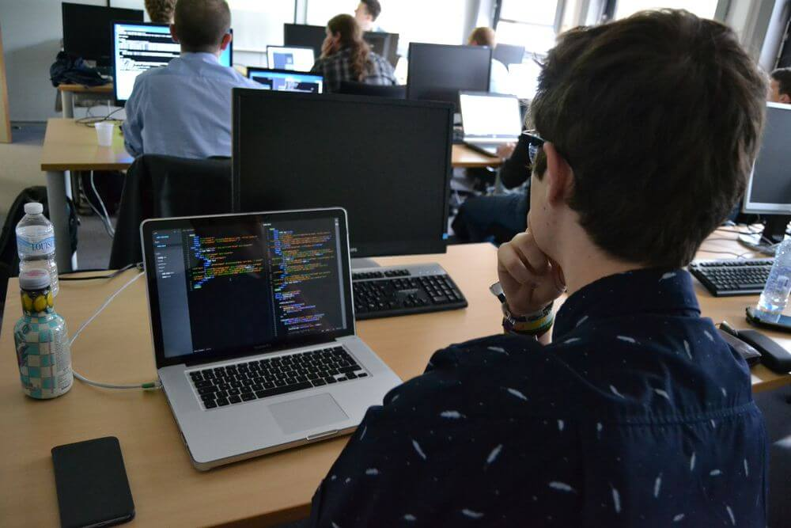
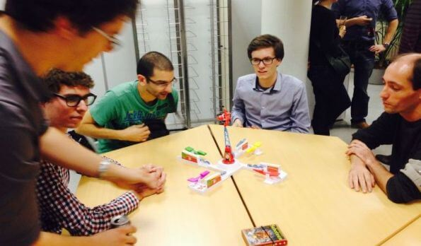
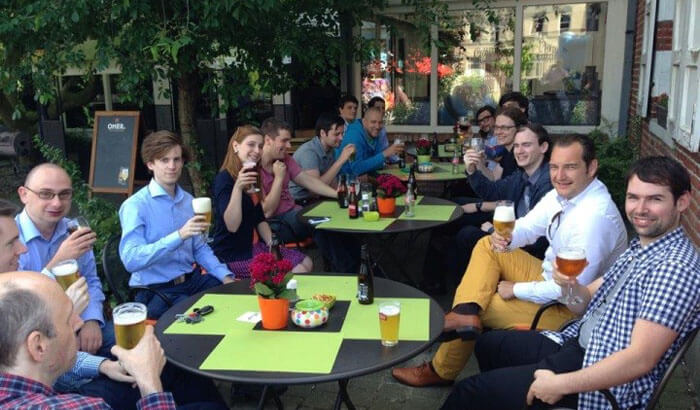
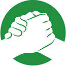
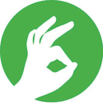
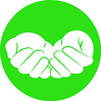
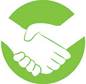

Presenting DevLabs

-  squads
-  conferences
-  cafés
-
- afhankelijk van leden
- avond
- 1 - 20 personen
- conferences
- cafés
-
- afhankelijk van leden
- avond
- 0 - 20 personen
-
- Huizingen
- namiddag + avond
- ± 85 personen
- cafés
-
- afhankelijk van leden
- avond
- 0 - 20 personen
-
- Huizingen
- namiddag + avond
- ± 85 personen
-
- afwisselende locaties
- avond
- 15 - 30 personen
- squads
- conferences
- cafés
-
squads
-
conferences
-
cafés
- DevLabs
- zelfgekozen technologie/onderwerp
- samen met collega's
- een halve dag TRM-tijd
een nieuw javascript framework waar je veel goeds van gehoord hebt, een tool die je altijd al hebt willen uitproberen, een nieuwe api die interessant lijkt, een platform dat veel belovend is,...
Alles kan zolang het maar werkgerelateerd is!
We komen steeds samen op 1 locatie waar iedereen kan werken rond zijn interesse. Er kunnen groepjes gevormd die aan de slag gaan met een bepaalde technologie. Je kan vragen stellen aan collega's, ideeën uitwisselen, ervaringen delen,...
Afsluiten doen we met hapje en een drankje, soms gevolgd door een fun-event.
Een halve dag om te doen wat jij wil, om bij te leren, om iets nieuws te ontdekken, om collega's te ontmoeten,...
- onderwerp op voorhand meedelen
- SMART doelstellingen definiëren
- op voorhand testomgeving in orde brengen
- op het einde volgt een tour de table
- resultaten documenteren
- DevLabs biedt ons de kans om
- samen te werken wat ons succes bepaalt
 passie & enthousiasme te delen
passie & enthousiasme te delen- ruimte te maken voor innovatie
- ieders eigenheid te respecteren
- Dit moet leiden tot
- het leveren van vakmanschap
- We vragen wel
- dat de afspraken nagekomen worden